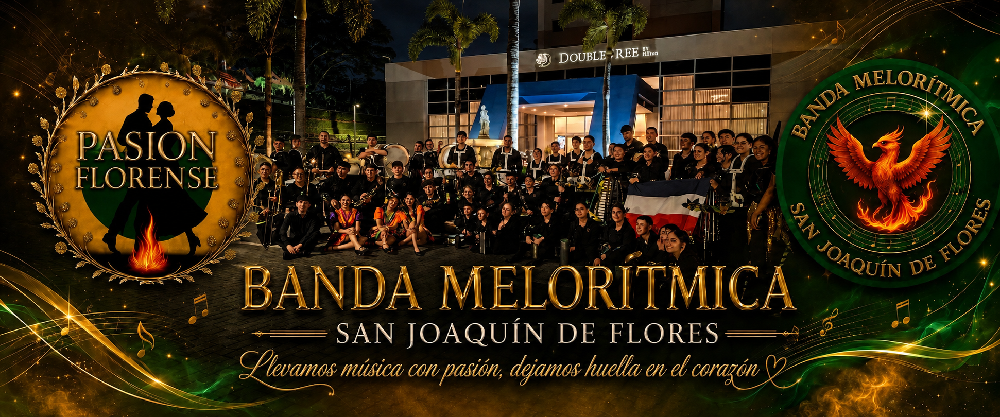

Una historia escrita con pasión, esfuerzo y amor por la música.

La Banda Melorítmica San Joaquín de Flores fue fundada el 15 de mayo de 2025 en San Joaquín de Flores, Heredia, Costa Rica, con el propósito de fomentar el talento musical y brindar un espacio donde niños, jóvenes y adultos puedan desarrollar su pasión por la música, fortaleciendo valores como el compromiso, el respeto y el trabajo en equipo.
Para nosotros, la música no es solo sonido; es libertad, es arte y es vida. Cuando tocamos nuestros instrumentos, el mundo se detiene. Las preocupaciones desaparecen y solo queda la paz que nace del ritmo, del compás y del corazón. Cada ensayo representa una oportunidad para crecer, y cada presentación es una nueva historia que compartimos con quienes nos escuchan.
En muy poco tiempo, la banda ha logrado representar con orgullo al cantón de Flores y a Costa Rica en escenarios nacionales e internacionales. A tan solo cinco meses de nuestra fundación, fuimos invitados a representar a nuestro país en Panamá, y ocho meses después tuvimos el honor de llevar nuestra música hasta Nicaragua, demostrando que no solo llevamos música, sino que también unimos fronteras a través del arte y la cultura.
Nuestro esfuerzo, disciplina y pasión nos han permitido obtener dos primeros lugares en nuestra categoría, logros que reflejan el compromiso de cada integrante y el deseo constante de superarnos.
Nuestro símbolo es el ave fénix, que representa la fortaleza, la perseverancia y la capacidad de renacer ante cada desafío. Así somos nosotros: una familia que aprende, crece y se fortalece con cada experiencia, llevando con orgullo el nombre de San Joaquín de Flores y de Costa Rica.
Hoy seguimos escribiendo nuestra historia, una historia que vibra con cada nota, que resuena en cada paso de desfile y que se enciende con cada aplauso. Somos la Banda Melorítmica San Joaquín de Flores, una familia que, como el ave fénix, nunca deja de renacer y de brillar.
Porque en nuestro corazón, la música siempre volverá a encender el fuego.
"Llevamos música con pasión,
dejamos huella en el corazón."
Momentos que capturan nuestra esencia
No necesitas experiencia, solo muchas ganas de aprender, actitud y responsabilidad.
Jueves: 6pm - 9pm
Domingos: 5pm - 8pm
Tu aporte nos ayuda a seguir creando música. ¡Gracias por apoyarnos!
8790-7832
Cada donación cuenta y nos impulsa a seguir tocando 💛💚